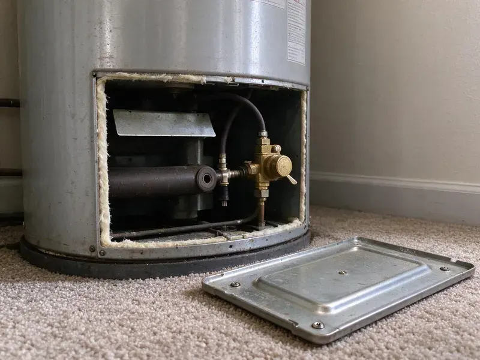
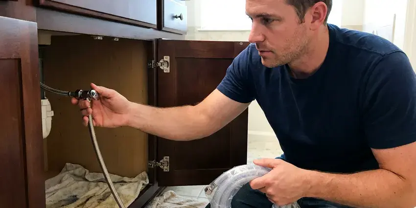
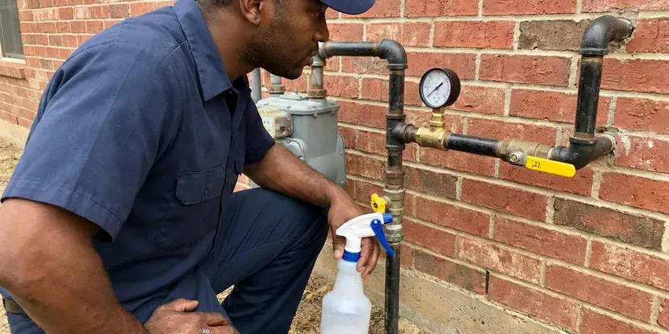

Sewer Repair in Bethel, AK
When you need reliable sewer repair in Bethel, AK, CKN Plumbing is the team locals trust. We handle everything from minor clogs to major line breaks fast and efficiently.
- Licensed Alaska Plumbing Contractor
- Warrantied Work
- Quick Sewer Diagnostics
- Honest Pricing
Stop the Backups and Get Your Sewer Line Repaired in Bethel, AK.
We're ready to handle any sewer issue, big or small, ensuring your system runs smoothly again.
Reliable Sewer Repair for Homes and Businesses in Bethel, AK
CKN Plumbing repairs the main sewer line that carries everything from your home to the city tap or septic tank. We start with a high-definition camera and locator so we know the depth, material and exact spot of the failure. Then we give you a written price for a spot repair, a section replacement or a trenchless repair.
Our expertise includes:
- Cleanout installation and code-compliant tie-ins at the city main
- Spot repairs on clay, cast iron, ABS and PVC sewer lines
- Traditional Dig-and-Replace Methods

Additional Plumbing Repair Services in Bethel, AK
We offer expert plumbing repair services across Bethel, AK to fix leaks, restore flow, and keep your system running smoothly.




Local water leak repair by CKN Plumbing, Bethel


Customers
Why Choose CKN Plumbing for Sewer Repair in Bethel, AK?
Our team uses the latest technology to accurately pinpoint problems, making sure we address the root cause of your sewer line problems.
- Video Proof, You see the crack, root mass or belly on screen before you approve any repair.
- Advanced Tools, Our technicians use professional-grade equipment for accurate diagnosis and effective repair of all sewer line issues.
- Clear Pricing, You'll always get upfront, honest pricing before any work begins, with no hidden fees.
Citywide Coverage
Whether your home ties into a municipal main or a private lateral shared with neighbors, we cover the whole Bethel area. We know where the older sewer infrastructure sits and how deep typical laterals run in local soil.
Experienced Team
Our sewer repair team at CKN Plumbing brings years of hands-on experience to every job. Each technician is fully trained in diagnosing complex sewer issues and making effective, long-lasting repairs, tailored to the conditions found in Alaska homes.
Safety-First Approach
When CKN Plumbing takes on a sewer repair, we put first the safety of your family and our technicians. Our procedures are designed to meet or exceed all industry safety standards, including proper excavation and handling of materials, for code-compliant and secure work in your Bethel home.
Trusted Certified Bethel Plumbing Services Professionals
At CKN Plumbing, we take pride in providing licensed, certified plumbing services throughout Bethel, AK. Backed by leading industry credentials, our experienced plumbers combine technical skill with genuine customer care. Whether it is repair, installation, or maintenance, we follow strict safety and quality standards to deliver long-lasting results you can trust.
Call Us Now PHCC Plumbing Contractor Recognition
PHCC Plumbing Contractor Recognition Better Business Bureau (BBB) Accreditation
Better Business Bureau (BBB) Accreditation Angi Certified Pro
Angi Certified Pro ISO 9001 Quality Management Certification
ISO 9001 Quality Management CertificationTrusted Sewer Repair Services in Bethel, AK
Emergency Sewer Repair in Bethel
Sewer emergencies, like major backups or foul odors, require immediate attention. CKN Plumbing offers rapid response for emergency sewer repair throughout Bethel. Our team is on standby to diagnose and fix urgent problems, preventing further damage to your property and restoring sanitation. We put a priority on these critical issues so your home's plumbing is promptly brought back to safe operating condition, even outside of regular business hours.

Pipe Burst & Collapse Repair in Bethel, AK
A burst or collapsed sewer pipe can lead to significant damage and unsanitary conditions. These issues can result from shifting soil, corrosion of old cast iron or clay pipes, or heavy vehicle traffic above the line. CKN Plumbing offers emergency repair services to quickly address these critical failures. We accurately locate the damaged section and provide durable repair or replacement options, often using trenchless methods where appropriate to limit disruption.
Sewer Camera Inspection in Bethel
Every sewer repair starts with a look inside the pipe. We run a self-leveling camera from your cleanout or a pulled toilet and record the full length of the line. A sonde in the camera head lets us mark the exact location and depth of every problem on the surface. You get a copy of the video and a plain-English summary of what we found. This step alone often saves homeowners from paying for repairs they do not need.
Sewer Vent Pipe Repair in Bethel, AK
While often overlooked, the sewer vent pipe is essential for proper drainage and preventing sewer gas buildup. Issues with vent pipes, such as blockages from animal nests or damage from strong winds, can lead to slow drains, gurgling noises and foul odors. CKN Plumbing diagnoses and repairs vent pipe problems, ensuring your entire drainage system works correctly and safely and protecting good indoor air quality.
Sewer Pipe Replacement Options in Bethel, AK
When repairs are no longer sufficient due to extensive damage, age or material failure, sewer pipe replacement becomes necessary. We offer several replacement options, including traditional trenching and modern trenchless technologies like pipe bursting or pipe lining. Our experts will assess your situation and recommend the most cost-effective and least disruptive option for your Alaska property, ensuring a long-lasting new sewer line.
Sewer Pipe Relining in Bethel, AK
Sewer pipe relining is a trenchless repair method where a new, durable pipe is created within the existing damaged one. A flexible, epoxy-impregnated liner is inserted into the old pipe and inflated, curing in place to form a seamless, strong and corrosion-resistant new pipe. This method is effective for addressing cracks, minor breaks and root intrusion without major digging. It extends the life of your sewer system and is an excellent option for preserving landscapes in Bethel.
Cracked and Broken Pipe Repair in Bethel
Clay and cast iron sewer pipe crack from soil movement, heavy vehicles and simple age. A cracked section lets sewage leak into the soil and lets dirt fall into the pipe, which leads to recurring clogs. We excavate at the marked spot, cut out the damaged length and install new Schedule 40 PVC with shielded couplings rated for the transition. The repair is tested before we backfill so you know it will hold.

Bellied Sewer Line Correction in Bethel, AK
A belly is a low spot where the pipe has sagged and holds standing water and solids. Bellies usually form where the original bedding washed out or where the soil settled after heavy rain. Glacial silt, gravel, and rock are common here, so excavating for sewer or water line repairs can take more planning than in milder places. We confirm the depth of standing water on camera, then re-bed and re-grade that section to restore proper fall. Correct slope is usually a quarter inch per foot for a typical residential line.
Sewer Repair Near Me in Bethel, AK
When you search for sewer repair near me, you want a crew that can show up, find the problem and fix it without a week of back and forth. Our local plumbers keep cameras and repair materials on the truck so most diagnoses happen on the first visit. We give you a fixed price before work starts.
No matter where you are in the greater Bethel area, our experienced plumbers are ready to address your sewer repair concerns quickly and professionally. We understand the urgency of sewer problems and strive to deliver fast, effective service right to your doorstep.
CKN Plumbing at a Glance
- Licensed and insured plumbers serving Bethel, AK
- 24/7 emergency service with same-day scheduling
- Upfront, flat-rate pricing before work begins
- 4.9-star rated by 309+ Alaska customers
Bethel Map
Bethel Information
- Population
- 6,292
- Area codes
- Local
- Service area
- Bethel and communities within 40 miles
- Nearby
- Kenai, Kalifornsky, Homer, Sterling
Sewer repair in Bethel, AK is frequently complicated by shifting soil and mature trees, which strain underground pipes and invite root intrusion. Glacial silt, gravel, and rock are common here, so excavating for sewer or water line repairs can take more planning than in milder places.
Expert Services
Trust our professionals for reliable CKN Plumbing solutions in Bethel, AK.
Our Specialized Plumbing Services in Bethel, AK
At CKN Plumbing, we provide a complete range of plumbing services across Bethel, AK. From leak detection to full system installations, our team ensures fast, precise, and affordable service for both residential and commercial properties. Explore our core services below:


How Our Sewer Repair Process Works in Bethel, AK
At CKN Plumbing, we follow a clear, systematic process to deliver efficient and effective sewer repair for your home.
Request a Quote
Contact CKN Plumbing at (928) 470-9007 to schedule an appointment. Our helpful staff will gather details about your sewer issue and set up a convenient time for a technician to visit your property.
Diagnosis and Estimate
Our technician will conduct a thorough inspection, often using video camera technology, to accurately diagnose the sewer problem. We will then provide a clear, upfront estimate for the repair, explaining all your options.
Expert Repair
Once you approve the estimate, our team will carry out the agreed-upon sewer repair. We use quality materials and proven techniques for a durable solution that meets all local codes.
Frequently Asked Questions About Sewer Repair in Bethel
The cost of sewer repair in Bethel, AK can vary a lot, typically ranging from $500 for minor spot repairs to $3,000 for extensive trenchless work, and up to $10,000 or more for full trench-based sewer line replacement. Factors like the extent of damage, type of repair, pipe material, depth and accessibility all affect the final price. We provide a detailed estimate after a thorough inspection.
Many cities require a permit for sewer line replacement and for any work in the public right-of-way. Small repairs on private property may not, depending on local rules. We check with your city and pull the permit when it is needed.
We use Schedule 40 PVC or ABS that meets local code, joined with approved fittings and shielded no-hub couplings at transitions. For lining, we use epoxy-saturated liners rated for decades of service.
Yes, weather can affect sewer lines. A long, severe heating season is the defining plumbing stress in Alaska, and boilers and water heaters run hard for much of the year. Heavy rains can saturate the ground, putting pressure on pipes and widening existing cracks. Dry spells can cause soil to shift, leading to pipe misalignment or breaks.
The duration of a sewer repair depends heavily on the scope of work. Simple spot repairs or hydro-jetting might take a few hours. Trenchless repairs like pipe lining can usually be completed in one to two days. Full sewer line replacements involving excavation can take anywhere from two to five days, depending on the length and complexity of the line.
Common causes include tree root intrusion, especially from older trees in established neighborhoods. Glacial silt, gravel, and rock are common here, so excavating for sewer or water line repairs can take more planning than in milder places. Corrosion of older cast iron or clay pipes, grease buildup from improper disposal and foreign objects flushed down drains also contribute to blockages and breaks.
Yes, CKN Plumbing stands behind the quality of our sewer repair work. We offer warranties on parts and labor for our sewer repair services. The exact terms and length of the warranty will be discussed with you before any work begins, giving you peace of mind about your investment.
Usually not. Camera locating lets us dig only at the damaged spot, and many problems can be fixed through a single pit or with trenchless methods. We protect landscaping and restore the area when we are done.
What People Are Saying About Our Plumbing Experts?

Laura S.
I scheduled a water heater replacement, and the team made the process smooth and affordable. The new unit works perfectly, and they cleaned up after completing the job.
Water Heater Replacement · Homer, AK
Robert G.
The trenchless sewer replacement saved our front yard. They walked us through the camera inspection footage first so we knew exactly what we were paying for.
Sewer Line Replacement · Bethel, AKSofia M.
Two new toilets installed in one visit, no mess left behind, and the tech even adjusted a faucet he noticed was dripping. Fair pricing and really friendly.
Toilet Installation · Knik-Fairview, AKJames P.
Our commercial plumbing system had a leak under the sink, and CKN Plumbing handled it professionally. The plumbers arrived quickly and restored everything without disruption to our customers.
Commercial Plumbing · Kodiak, AK
Daniel K.
A pipe burst at 11 pm and they actually answered. The plumber showed up within the hour, shut everything down, and had us back to normal the next morning. Could not ask for more.
Emergency Plumbing · Homer, AK
Emily R.
I called CKN Plumbing for plumbing repair, and the technician was fast, polite, and thorough. They explained the problem clearly and fixed it the same day. I will definitely hire them again. Highly recommended!
Plumbing Repair · Knik-Fairview, AK